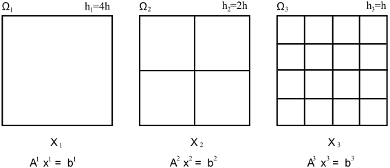

The geometric multigrid solver
Multigrid is a very special solver which differs slightly in setting up a corresponding solver tree. A multigrid solver does not rely on just one linear system on one mesh. Instead, it exploits a sequence of linear systems created by a sequence of refined meshes.
- Problem hierarchy
- Let $\Omega\subset\mathbb{R}^d$ be a domain and $\Omega_1$, $\Omega_2$, ..., $\Omega_N$ be a sequence of meshes approximating $\Omega$. $\Omega_1$ is the coarsest mesh and $\Omega_N$ the finest one. For every level $l=1,...,N$, there is a mesh size $h_l$ associated, with $h=h^L$ being the mesh size of the finest mesh on level $L$. Assuming regular reginement, one has $h_l:=2^{L-l} h$.
-
This sequence of meshes generates a sequence of finite element spaces $X_1$, ..., $X_L$, with $X_L=X_h$ denoting the finite element space of the underlying PDE on the finest mesh. Discretisation of the underlying PDE leads to a sequence of linear problems on all meshes, $$A^l x^l = b^l \qquad\text{on level $l=1,...,L$}.$$ With $A=A^L$, $x=x^L$ and $b=b^L$, the underlying aim is to compute a solution of the linear system $$A x = b\qquad\text{on level $L$}.$$
The following figure demonstrates such a problem hierarchy. A sequence of meshes implies a sequence of FE spaces which lead to a sequence of problems.

- Minimum requirements
-
The minimum requirements, a multigrid solver needs for doing its work, can be summarised as follows:
A set of matrices $A^1$, ..., $A^L$ for all levels.
A "coarse grid" solver on level 1, i.e., any linear solver which is robust and able to efficiently solve a linear system on level $l=1$. This can be, e.g., an iterative solver or a Gauss elimination.
On every level $l>1$ a "smoother". This is typically an iterative solver which performs a fixed number of iterations to "partially" solve a linear system on level $l$.
The right-hand side vector $b=b_L$ on the maximum level. In fact, right-hand side vectors $b^l$ on level $l < L$ are not used.
- Additional components
-
In addition to the above minimum requirements, the multigrid solver allows the specification of additional components:
A prolongation operator $P:X_{l-1}\to X_l$, $l=2,...,L$, for interpolating a solution from a coarser to a finer level.
A restriction operator $R:X_l^*\to X_{l-1}^*$, $l=2,...,L$, for shifting right-hand side vectors to coarser levels; $X_l^*$ denotes here the space of right-hand side vectors which can usually be associated to $X_l$ via the degrees of freedom.
A filter chain on every level that implements boundary conditions into defect vectors.
A damping strategy which automatically adjusts the damping of the coarse grid correction
-
For nonlinear problems which apply a linear solver for intermediate problems, one usually needs
- an additional interpolation operator $I:X_l\to X_{l-1}$ that interpolates a solution down to a lower level.
Basic setup
The following code demonstrates how to set up a basic solver tree for a geometric multigrid solver.
type(t_linsolNode), pointer :: p_rsolver, p_rsmoother
type(t_linsolMG2LevelInfo), pointer :: p_rlevel
type(t_matrixBlock), dimension(:), pointer :: Rmatrices
integer :: i,NLMAX
...
! Create multigrid
call linsol_initMultigrid2 (p_rsolver,NLMAX)
! Create a coarse grid solver on level 1
call linsol_getMultigrid2Level (p_rsolver,1,p_rlevel)
call linsol_initUMFPACK4 (p_rlevel%p_rcoarseGridSolver)
! Create smoothers on all levels l>1
do i = 2,NLMAX
! Create a Jacobi smoother, 4 smoothing steps, damping 0.7
call linsol_initJacobi(p_rsmoother)
call linsol_convertToSmoother(p_rsmoother, 4, 0.7_DP)
! Use for pre- and postsmoothing
call linsol_getMultigrid2Level (p_rsolver,i,p_rlevel)
p_rlevelInfo%p_rpresmoother => p_rsmoother
p_rlevelInfo%p_rpostsmoother => p_rsmoother
end do
...
! Prepare system matrices
allocate(Rmatrices(NLMAX))
do i=1,NLMAX
... (set up matrix on level l)
end do
! Tell the solver about our matrices
call linsol_setMatrices(p_rsolver,Rmatrices)
... (solve the system)
The code performs as follows:
In the beginning, a solver node for
NLMAXlevels is created.On level $l=1$, an UMFPACK coarse grid solver is created.
On level $l>1$, a simple Jacobi(0.7) smoother is created. This is installed as presmoother and postsmoother.
An array of NLMAX matrices is allocated. On every level, a system matrix is created. The array of system matrices on all levels is finally passed to the solver.
Some remarks to the above code:
The access to the different levels of the multigrid solver is done via the routine
linsol_getMultigrid2Levelwhich returns a pointer to a "level structure". During the initialisation, the different parameters in this structure has to be defined in a loop over all levels. On the coarsest mesh, a coarse grid solver has to be installed, while on finer meshes smoothers have to be defined.Multigrid allows to define a "presmoother" (smoothing before a correction by coarse grid data) and a "postsmoother" (smoothing after the correction by coarse grid data). At least one of them should be defined on every level $l>1$, otherwise, the multigrid iteration will not converge.
The command
linsol_initJacobicreates a Jacobi preconditioner. An additional defect correction loop (which would be necessary to use Jacobi as solver) is optional; multigrid automatically applies an internal defect correction if it is not specified.The command
linsol_convertToSmoother"converts" a solver nodep_rsmootherinto a smoother. This is basically done by fixing the minimum and maximum number of iterations in the solver to the defined value, here 4. Furthermore, it allows the specification of an additional damping parameter, which is here set to 0.7.
Boundary condition filters
For problems with boundary conditions, it is advisable to install on every level a boundary condition defect filter that filters defect vectors for boundary conditions. The problem is that prolongation/restriction operators usually destroy any boundary condition imposed to any vector. Boundary condition filters are usually applied directly after a restriction and a prolongation to ensure that boundary conditions are fulfilled.
For this purpose, a filter chain has to be installed on every level which applies the corresponding boundary conditions (see also the section about filtering). A filter chain consists of an array of t_filterChain structures, each representing a filter to be applied to (defect) vectors. The following code demonstrates the use of such filter chains, which have to be set up (similar to matrices) on all levels.
type(t_linsolNode), pointer :: p_rsolver, p_rsmoother
type(t_linsolMG2LevelInfo), pointer :: p_rlevel
type(t_matrixBlock), dimension(:), pointer :: Rmatrices
integer :: i,NLMAX
integer :: nfilters
type(t_filterChain), dimension(:,:), target :: RfilterChains
type(t_discreteBC), target :: RdiscreteBC
...
! Prepare boundary conditions on all levels
do i=1,NLMAX
call bcasm_initDiscreteBC(RdiscreteBC(i))
... initialise RdiscreteBC(i) with boundary conditions
end do
...
! Allocate memory for the filter chains
allocate (RfilterChains(1,NLMAX))
do i=1,NLMAX
! Set up a filter chain for boundary conditions on this level
call filter_clearFilterChain (RfilterChains(:,i),nfilters)
call filter_newFilterDiscBCDef (RfilterChains(:,i),nfilters,RdiscreteBC(i))
end do
! Create multigrid
call linsol_initMultigrid2 (p_rsolver,NLMAX)
! Create a coarse grid solver on level 1.
call linsol_getMultigrid2Level (p_rsolver,1,p_rlevel)
call linsol_initBiCGStab (&
p_rlevel%p_rcoarseGridSolver,Rfilter=RfilterChains(:,1))
! Pass the filter chain.
p_rlevel%p_RfilterChain => RfilterChains(:,1)
! Create smoothers on all levels l>1
do i = 2,NLMAX
! Create a Jacobi smoother, 4 smoothing steps, damping 0.7
call linsol_initJacobi(p_rsmoother)
call linsol_convertToSmoother(p_rsmoother, 4, 0.7_DP)
! Use for pre- and postsmoothing
call linsol_getMultigrid2Level (p_rsolver,i,p_rlevel)
p_rlevelInfo%p_rpresmoother => p_rsmoother
p_rlevelInfo%p_rpostsmoother => p_rsmoother
! Pass the filter chain
call linsol_getMultigrid2Level (p_rsolver,i,p_rlevel)
p_rlevel%p_RfilterChain => RfilterChains(:,i)
end do
...
The code performs as follows:
On every level $i$, a boundary condition structure
RdiscreteBC(i)is created which encapsules, e.g., Dirichlet boundary conditions.Coarse grid solvers and smoothers are created as usual.
A 2D array
RfilterChainsis created which contains a set of filters on every level. In the above example, there is only one filter per level, a boundary condition filter.The filter chain of every level is attached to the corresponding level where is should be applied. Additionally, the filter chain is passed to BiCGStab which wants to have it as parameter as well.